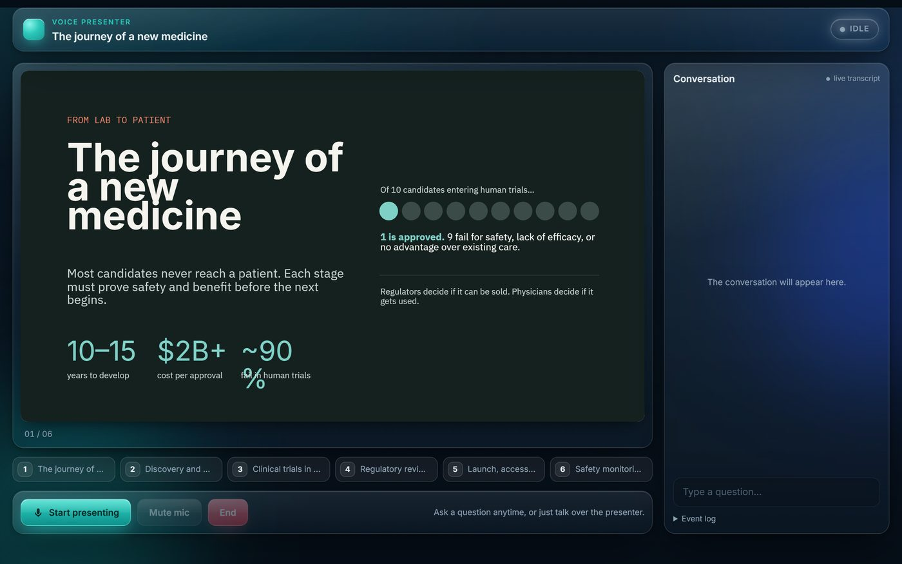

TalkDeck
A voice agent that presents a slide deck and can be interrupted mid-sentence.
Talk to it like a presenter. Ask a question and it jumps to the slide that answers it, replies, and offers to pick up where it left off. The slides are a real .pptx and it speaks from the speaker notes. The server relays the Gemini Live session so the API key stays off the browser, and the voice provider sits behind one adapter.
- Tested with 20 automated voice trials per run: synthesized questions streamed into a live session, including interrupting exactly as a slide changes
- 20 of 20 on the three-slide test deck and 19 of 20 on the six-slide deck
- Barge-in detected in every trial, median 360 to 470 ms
FastAPI, Gemini Live API, python-pptx, JavaScript